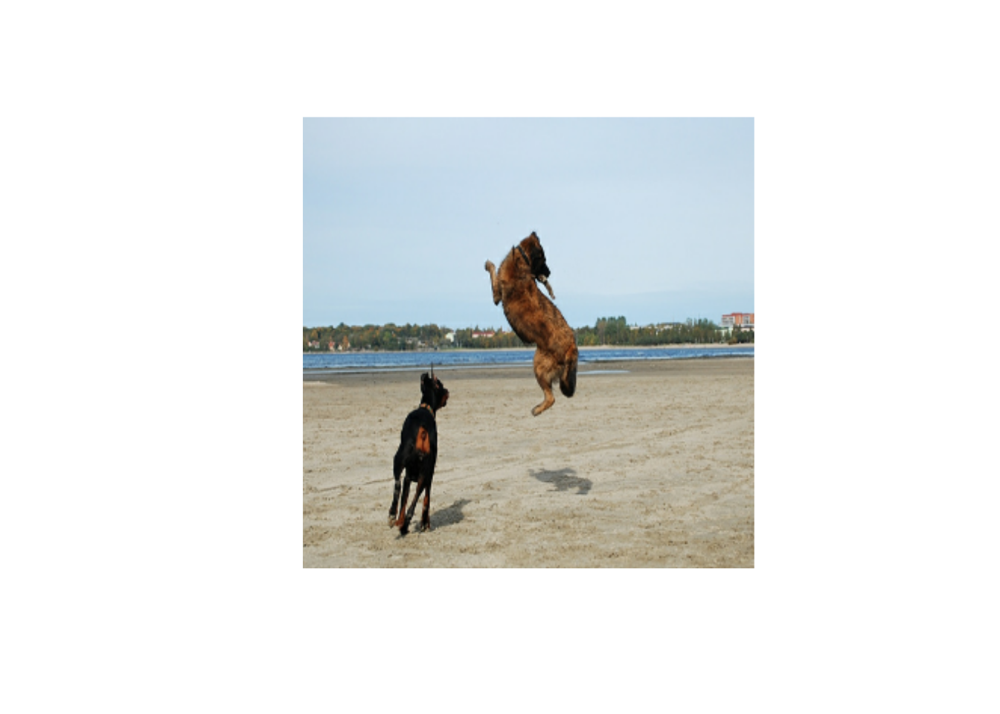

library(tensorflow)
library(keras)
library(tfdatasets)Image Captioning
Implement an image captioning model using a CNN and a Transformer.
Setup
Download the dataset
We will be using the Flickr8K dataset for this tutorial. This dataset comprises over 8,000 images, that are each paired with five different captions.
flickr_images <- get_file(
"fickr8k.zip",
"https://github.com/jbrownlee/Datasets/releases/download/Flickr8k/Flickr8k_Dataset.zip"
)Loaded Tensorflow version 2.9.1flickr_text <- get_file(
"flickr9k_text.zip",
"https://github.com/jbrownlee/Datasets/releases/download/Flickr8k/Flickr8k_text.zip"
)
if (!fs::dir_exists(fs::path(fs::path_dir(flickr_text), "Flicker8k_Dataset"))) {
unzip(flickr_images, exdir = fs::path_dir(flickr_images))
unzip(flickr_text, exdir = fs::path_dir(flickr_text))
}# Path to the images
IMAGES_PATH <- "Flicker8k_Dataset"
# Desired image dimensions
IMAGE_SIZE <- shape(299, 299)
# Vocabulary size
VOCAB_SIZE <- 10000
# Fixed length allowed for any sequence
SEQ_LENGTH <- 25
# Dimension for the image embeddings and token embeddings
EMBED_DIM <- 512
# Per-layer units in the feed-forward network
FF_DIM <- 512
# Other training parameters
BATCH_SIZE <- 64
EPOCHS <- 30
AUTOTUNE <- tf$data$AUTOTUNEPreparing the dataset
captions <- fs::path(fs::path_dir(flickr_text), "Flickr8k.token.txt") %>%
readr::read_delim(
col_names = c("img", "caption"),
delim = "\t"
) %>%
tidyr::separate(img, into = c("img", "caption_id"), sep = "#") %>%
dplyr::select(img, caption) %>%
dplyr::group_by(img) %>%
dplyr::summarise(caption = list(caption)) %>%
dplyr::mutate(img = fs::path(fs::path_dir(flickr_text), "Flicker8k_Dataset", img))Rows: 40460 Columns: 2── Column specification ────────────────────────────────────────────────────────
Delimiter: "\t"
chr (2): img, caption
ℹ Use `spec()` to retrieve the full column specification for this data.
ℹ Specify the column types or set `show_col_types = FALSE` to quiet this message.train <- fs::path(fs::path_dir(flickr_text), "Flickr_8k.trainImages.txt") %>%
readr::read_lines()
valid <- fs::path(fs::path_dir(flickr_text), "Flickr_8k.devImages.txt") %>%
readr::read_lines()
test <- fs::path(fs::path_dir(flickr_text), "Flickr_8k.testImages.txt") %>%
readr::read_lines()
train_data <- captions %>%
dplyr::filter(fs::path_file(img) %in% train)
valid_data <- captions %>%
dplyr::filter(fs::path_file(img) %in% test)
dplyr::n_distinct(train_data$img)[1] 6000dplyr::n_distinct(valid_data$img)[1] 1000Vectorizing the text data
We’ll use the text_vectorization layer to vectorize the text data, that is to say, to turn the original strings into integer sequences where each integer represents the index of a word in a vocabulary. We will use a custom string standardization scheme (strip punctuation characters except < and >) and the default splitting scheme (split on whitespace).
punctuation <- c("!", "\\", "\"", "#", "$", "%", "&", "'", "(", ")", "*",
"+", ",", "-", ".", "/", ":", ";", "=", "?", "@", "[",
"\\", "\\", "]", "^", "_", "`", "{", "|", "}", "~")
re <- reticulate::import("re")
punctuation_group <- punctuation %>%
sapply(re$escape) %>%
paste0(collapse = "") %>%
sprintf("[%s]", .)
custom_standardization <- function(input_string) {
lowercase <- tf$strings$lower(input_string)
tf$strings$regex_replace(lowercase, punctuation_group, "")
}
vectorization <- layer_text_vectorization(
max_tokens = VOCAB_SIZE,
output_mode = "int",
output_sequence_length = SEQ_LENGTH,
standardize = custom_standardization,
)
vectorization %>% adapt(unlist(train_data$caption))
# Data augmentation for image data
image_augmentation <- keras_model_sequential() %>%
layer_random_flip("horizontal") %>%
layer_random_rotation(0.2) %>%
layer_random_contrast(0.3)Building a TensorFlow dataset pipeline for training
We will generate pairs of images and corresponding captions using a tf$data$Dataset object. The pipeline consists of two steps:
- Read the image from the disk
- Tokenize all the five captions corresponding to the image
decode_and_resize <- function(img_path) {
img_path %>%
tf$io$read_file() %>%
tf$image$decode_jpeg(channels = 3) %>%
tf$image$resize(IMAGE_SIZE) %>%
tf$image$convert_image_dtype(tf$float32)
}
process_input <- function(img_path, captions) {
reticulate::tuple(
decode_and_resize(img_path),
vectorization(captions)
)
}
make_dataset <- function(data) {
data %>% unname() %>%
tensor_slices_dataset() %>%
dataset_shuffle(nrow(data)) %>%
dataset_map(process_input, num_parallel_calls = AUTOTUNE) %>%
dataset_batch(BATCH_SIZE) %>%
dataset_prefetch(AUTOTUNE)
}
# Pass the list of images and the list of corresponding captions
train_dataset <- make_dataset(train_data)
valid_dataset <- make_dataset(valid_data)Building the model
Our image captioning architecture consists of three models:
- A CNN: used to extract the image features
- A TransformerEncoder: The extracted image features are then passed to a Transformer based encoder that generates a new representation of the inputs
- A TransformerDecoder: This model takes the encoder output and the text data (sequences) as inputs and tries to learn to generate the caption.
get_cnn_model <- function() {
base_model <- application_efficientnet_b0(
input_shape = c(IMAGE_SIZE, 3),
include_top = FALSE,
weights = "imagenet"
)
# We freeze our feature extractor
base_model$trainable <- FALSE
base_model_out <- base_model$output %>%
layer_reshape(target_shape = c(-1, tail(dim(base_model$output), 1)))
keras_model(base_model$input, base_model_out)
}
transformer_encoder_block <- new_layer_class(
"transformer_encoder_block",
initialize = function(embed_dim, dense_dim, num_heads, ...) {
super()$`__init__`(...)
self$embed_dim <- embed_dim
self$dense_dim <- dense_dim
self$num_heads <- num_heads
self$attention_1 <- layer_multi_head_attention(
num_heads = num_heads, key_dim = embed_dim, dropout = 0.0
)
self$layernorm_1 <- layer_normalization()
self$layernorm_2 <- layer_normalization()
self$dense_1 <- layer_dense(units = embed_dim, activation = "relu")
},
call = function(inputs, training, mask = NULL) {
inputs <- self$layernorm_1(inputs)
inputs <- self$dense_1(inputs)
attention_output_1 <- self$attention_1(
query = inputs,
value = inputs,
key = inputs,
attention_mask = NULL,
training = training,
)
out_1 <- self$layernorm_2(inputs + attention_output_1)
out_1
}
)
positional_embedding <- new_layer_class(
"positional_embedding",
initialize = function(sequence_length, vocab_size, embed_dim, ...) {
super()$`__init__`(...)
self$token_embeddings <- layer_embedding(
input_dim = vocab_size, output_dim = embed_dim
)
self$position_embeddings <- layer_embedding(
input_dim = sequence_length, output_dim = embed_dim
)
self$sequence_length <- sequence_length
self$vocab_size <- vocab_size
self$embed_dim <- embed_dim
self$embed_scale <- tf$math$sqrt(tf$cast(embed_dim, tf$float32))
},
call = function(inputs) {
length <- tail(dim(inputs), 1)
positions <- tf$range(start = 0L, limit = length, delta = 1L)
embedded_tokens <- self$token_embeddings(inputs)
embedded_tokens <- embedded_tokens * self$embed_scale
embedded_positions <- self$position_embeddings(positions)
embedded_tokens + embedded_positions
},
compute_mask = function(inputs, mask) {
tf$math$not_equal(inputs, 0L)
}
)
transformer_decoder_block <- new_layer_class(
"transformer_decoder_block",
initialize = function(embed_dim, ff_dim, num_heads, ...) {
super()$`__init__`(...)
self$embed_dim <- embed_dim
self$ff_dim <- ff_dim
self$num_heads <- num_heads
self$attention_1 <- layer_multi_head_attention(
num_heads = num_heads, key_dim = embed_dim, dropout = 0.1
)
self$attention_2 <- layer_multi_head_attention(
num_heads = num_heads, key_dim = embed_dim, dropout = 0.1
)
self$ffn_layer_1 <- layer_dense(units = ff_dim, activation = "relu")
self$ffn_layer_2 <- layer_dense(units = embed_dim)
self$layernorm_1 <- layer_normalization()
self$layernorm_2 <- layer_normalization()
self$layernorm_3 <- layer_normalization()
self$embedding <- positional_embedding(
embed_dim = EMBED_DIM, sequence_length = SEQ_LENGTH, vocab_size = VOCAB_SIZE
)
self$out <- layer_dense(units = VOCAB_SIZE, activation = "softmax")
self$dropout_1 <- layer_dropout(rate = 0.3)
self$dropout_2 <- layer_dropout(rate = 0.5)
self$supports_masking <- TRUE
},
call = function(inputs, encoder_outputs, training, mask = NULL) {
inputs <- self$embedding(inputs)
causal_mask <- self$get_causal_attention_mask(inputs)
if(!is.null(mask)) {
padding_mask <- tf$cast(mask[, , tf$newaxis], dtype = tf$int32)
combined_mask <- tf$cast(mask[, tf$newaxis, ], dtype = tf$int32)
combined_mask <- tf$minimum(combined_mask, causal_mask)
}
attention_output_1 <- self$attention_1(
query = inputs,
value = inputs,
key = inputs,
attention_mask = combined_mask,
training = training,
)
out_1 <- self$layernorm_1(inputs + attention_output_1)
attention_output_2 <- self$attention_2(
query = out_1,
value = encoder_outputs,
key = encoder_outputs,
attention_mask = padding_mask,
training = training,
)
out_2 <- self$layernorm_2(out_1 + attention_output_2)
ffn_out <- self$ffn_layer_1(out_2)
ffn_out <- self$dropout_1(ffn_out, training = training)
ffn_out <- self$ffn_layer_2(ffn_out)
ffn_out <- self$layernorm_3(ffn_out + out_2, training = training)
ffn_out <- self$dropout_2(ffn_out, training = training)
preds <- self$out(ffn_out)
preds
},
get_causal_attention_mask = function(inputs) {
input_shape <- tf$shape(inputs)
batch_size <- input_shape[1]
sequence_length <- input_shape[2]
i <- tf$range(sequence_length)[, tf$newaxis]
j <- tf$range(sequence_length)
mask <- tf$cast(i >= j, dtype = "int32")
mask <- tf$reshape(mask, list(1L, input_shape[2], input_shape[2]))
mult <- tf$concat(list(
tf$expand_dims(batch_size, -1L),
as_tensor(c(1L, 1L), dtype = tf$int32)
), axis = 0L)
tf$tile(mask, mult)
}
)
image_captioning_model <- new_model_class(
"image_captioning_model",
initialize = function(cnn_model, encoder, decoder, num_captions_per_image = 5,
image_aug = NULL) {
super()$`__init__`()
self$cnn_model <- cnn_model
self$encoder <- encoder
self$decoder <- decoder
self$loss_tracker <- metric_mean(name = "loss")
self$acc_tracker <- metric_mean(name = "accuracy")
self$num_captions_per_image <- num_captions_per_image
self$image_aug <- image_aug
},
calculate_loss = function(y_true, y_pred, mask) {
loss <- self$loss(y_true, y_pred)
mask <- tf$cast(mask, dtype = loss$dtype)
loss <- loss* mask
tf$reduce_sum(loss) / tf$reduce_sum(mask)
},
calculate_accuracy = function(y_true, y_pred, mask) {
accuracy <- tf$equal(y_true, tf$argmax(y_pred, axis = 2L))
accuracy <- tf$math$logical_and(mask, accuracy)
accuracy <- tf$cast(accuracy, dtype = tf$float32)
mask <- tf$cast(mask, dtype = tf$float32)
tf$reduce_sum(accuracy) / tf$reduce_sum(mask)
},
.compute_caption_loss_and_acc = function(img_embed, batch_seq, training = TRUE) {
encoder_out <- self$encoder(img_embed, training = training)
batch_seq_inp <- batch_seq[, NULL:-2]
batch_seq_true <- batch_seq[, 2:NULL]
mask <- tf$math$not_equal(batch_seq_true, 0L)
batch_seq_pred <- self$decoder(
batch_seq_inp, encoder_out, training = training, mask = mask
)
loss <- self$calculate_loss(batch_seq_true, batch_seq_pred, mask)
acc <- self$calculate_accuracy(batch_seq_true, batch_seq_pred, mask)
list(loss, acc)
},
train_step = function(batch_data) {
batch_img <- batch_data[[1]]
batch_seq <- batch_data[[2]]
batch_loss <- 0
batch_acc <- 0
if (!is.null(self$image_aug)){
batch_img <- self$image_aug(batch_img)
}
# 1. Get image embeddings
img_embed <- self$cnn_model(batch_img)
# 2. Pass each of the five captions one by one to the decoder
# along with the encoder outputs and compute the loss as well as accuracy
# for each caption.
for (i in seq_len(self$num_captions_per_image)) {
with(tf$GradientTape() %as% tape, {
c(loss, acc) %<-% self$.compute_caption_loss_and_acc(
img_embed, batch_seq[, i, ], training = TRUE
)
# 3. Update loss and accuracy
batch_loss <- batch_loss + loss
batch_acc <- batch_acc + acc
})
# 4. Get the list of all the trainable weights
train_vars <- c(self$encoder$trainable_variables,
self$decoder$trainable_variables)
# 5. Get the gradients
grads <- tape$gradient(loss, train_vars)
# 6. Update the trainable weights
self$optimizer$apply_gradients(zip_lists(grads, train_vars))
}
# 7. Update the trackers
batch_acc <- batch_acc/self$num_captions_per_image
self$loss_tracker$update_state(batch_loss)
self$acc_tracker$update_state(batch_acc)
# 8. Return the loss and accuracy values
list(
loss = self$loss_tracker$result(),
acc = self$acc_tracker$result()
)
},
test_step = function(batch_data) {
batch_img <- batch_data[[1]]
batch_seq <- batch_data[[2]]
batch_loss <- 0
batch_acc <- 0
# 1. Get image embeddings
img_embed <- self$cnn_model(batch_img)
# 2. Pass each of the five captions one by one to the decoder
# along with the encoder outputs and compute the loss as well as accuracy
# for each caption.
for (i in seq_len(self$num_captions_per_image)) {
with(tf$GradientTape() %as% tape, {
c(loss, acc) %<-% self$.compute_caption_loss_and_acc(
img_embed, batch_seq[, i, ], training = TRUE
)
# 3. Update loss and accuracy
batch_loss <- batch_loss + loss
batch_acc <- batch_acc + acc
})
}
batch_acc <- batch_acc / self$num_captions_per_image
# 4. Update the trackers
self$loss_tracker$update_state(batch_loss)
self$acc_tracker$update_state(batch_acc)
# 5. Return the loss and accuracy values
list(
"loss" = self$loss_tracker$result(),
"acc" = self$acc_tracker$result()
)
},
metrics = mark_active(function() {
# We need to list our metrics here so the `reset_states()` can be
# called automatically.
list(self$loss_tracker, self$acc_tracker)
})
)
cnn_model <- get_cnn_model()
encoder <- transformer_encoder_block(embed_dim = EMBED_DIM, dense_dim = FF_DIM, num_heads = 1)
decoder <- transformer_decoder_block(embed_dim = EMBED_DIM, ff_dim = FF_DIM, num_heads = 2)
caption_model <- image_captioning_model(
cnn_model = cnn_model,
encoder = encoder,
decoder = decoder,
image_aug = image_augmentation
)Model training
# Define the loss function
cross_entropy <- loss_sparse_categorical_crossentropy(
from_logits = FALSE, reduction = "none"
)
# EarlyStopping criteria
early_stopping <- callback_early_stopping(patience = 3, restore_best_weights = TRUE)
# Learning Rate Scheduler for the optimizer
lr_schedule <- new_learning_rate_schedule_class(
"lr_schedule",
initialize = function(post_warmup_learning_rate, warmup_steps) {
super()$`__init__`()
self$post_warmup_learning_rate <- post_warmup_learning_rate
self$warmup_steps <- warmup_steps
},
call = function(step) {
global_step <- tf$cast(step, tf$float32)
warmup_steps <- tf$cast(self$warmup_steps, tf$float32)
warmup_progress <- global_step / warmup_steps
warmup_learning_rate <- self$post_warmup_learning_rate * warmup_progress
tf$cond(
global_step < warmup_steps,
function() warmup_learning_rate,
function() self$post_warmup_learning_rate
)
}
)
# Create a learning rate schedule
num_train_steps <- length(train_dataset) * EPOCHS
num_warmup_steps <- num_train_steps %/% 15
lr <- lr_schedule(post_warmup_learning_rate = 1e-4, warmup_steps = num_warmup_steps)
# Compile the model
caption_model %>% compile(
optimizer = optimizer_adam(learning_rate = lr),
loss = cross_entropy
)
# Fit the model
caption_model %>% fit(
train_dataset,
epochs = EPOCHS,
validation_data = valid_dataset,
callbacks = list(early_stopping)
)Warning: Negative numbers are interpreted python-style when subsetting tensorflow tensors.
See: ?`[.tensorflow.tensor` for details.
To turn off this warning, set `options(tensorflow.extract.warn_negatives_pythonic = FALSE)`Check sample predictions
vocab <- get_vocabulary(vectorization)
max_decoded_sentence_length <- SEQ_LENGTH - 1
valid_images <- valid_data$img
generate_caption <- function() {
# Select a random image from the validation dataset
sample_img <- sample(valid_images, 1)
# Read the image from the disk
sample_img <- decode_and_resize(sample_img)
img <- as.array(tf$clip_by_value(sample_img, 0, 255))
img %>% as.raster(max = 255) %>% plot()
# Pass the image to the CNN
img <- tf$expand_dims(sample_img, 0L)
img <- caption_model$cnn_model(img)
# Pass the image features to the Transformer encoder
encoded_img <- caption_model$encoder(img, training = FALSE)
# Generate the caption using the Transformer decoder
decoded_caption <- "<start> "
for (i in seq_len(max_decoded_sentence_length)) {
tokenized_caption <- vectorization(list(decoded_caption))
mask <- tf$math$not_equal(tokenized_caption, 0L)
predictions <- caption_model$decoder(
tokenized_caption, encoded_img, training = FALSE, mask = mask
)
sampled_token_index <- tf$argmax(predictions[1, i, ])
sampled_token <- vocab[as.integer(sampled_token_index) + 1]
if (sampled_token == " <end>") {
break
}
decoded_caption <- paste(decoded_caption, sampled_token, sep = " ")
}
cat("Predicted Caption: ", decoded_caption)
}
# Check predictions for a few samples
generate_caption()
Predicted Caption: <start> skier is doing a jump in the air on a snowboard in the air on a snowy field of snow covered ground in thegenerate_caption()
Predicted Caption: <start> dog running on the beach with a dog with a ball in the background and a sandy area with a sandy area with agenerate_caption()
Predicted Caption: <start> boy is standing in a river with a stick in the water and a lake and a lake and a lake in the backgroundEnd Notes
We saw that the model starts to generate reasonable captions after a few epochs. To keep this example easily runnable, we have trained it with a few constraints, like a minimal number of attention heads. To improve the predictions, you can try changing these training settings and find a good model for your use case.